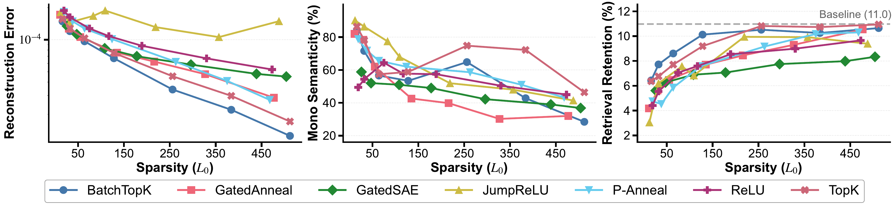

Mechanistic retrieval explanations
Xetrieval identifies sparse feature overlaps O(q,d)
that connect query and document representations.
Research Project
Beihang University · Beijing Institute for General Artificial Intelligence

Abstract
Dense retrievers assign relevance scores through opaque high-dimensional embeddings, making it difficult to diagnose why a particular document is retrieved for a given query.
Xetrieval is an embedding-level mechanistic framework for explaining dense retrieval. It approximates Chain-of-Thought reasoning directly in embedding space, decomposes reasoning-enhanced embeddings into sparse human-interpretable features, and attributes individual retrieval decisions to shared active features between the query and document-side views.
Xetrieval identifies sparse feature overlaps O(q,d)
that connect query and document representations.
A lightweight feed-forward module injects reasoning-oriented signals into document embeddings without autoregressive generation.
Steering and intervention experiments test whether discovered features causally affect retrieval behavior.
Experiments
The figures below are copied from PDF figures that are actually used by the LaTeX manuscript.



Code
The release contains the inference pipeline, TopK-SAE mechanistic
explainer checkpoint, and reasoning internalizer checkpoints for
qa, summary, and purpose
document-side views.
git clone https://github.com/Hihiczx/Xetrieval.git
cd Xetrieval
pip install -r requirements.txt
python explain_retrieval.py \
--input_jsonl examples/query_doc_pairs.jsonl \
--output_jsonl outputs/explanations.jsonl \
--embedding_model_name intfloat/e5-large-v2 \
--reasoning_internalizer_dir checkpoints/reasoning_internalizer \
--mechanistic_explainer_checkpoint checkpoints/sae_model.pt \
--device cuda \
--batch_size 64Resources
Citation
Citation metadata will be updated when the paper is public.
@misc{xetrieval,
title = {Xetrieval: Mechanistically Explaining Dense Retrieval},
author = {Cai, Zhixin and Bai, Jun and Liu, Yang and Li, Jiaqi and Zhang, Yichi and Li, Taichuan and Chen, Zhuofan and Jia, Zixia and Zheng, Zilong and Rong, Wenge},
year = {2026},
note = {Code available at https://github.com/Hihiczx/Xetrieval}
}